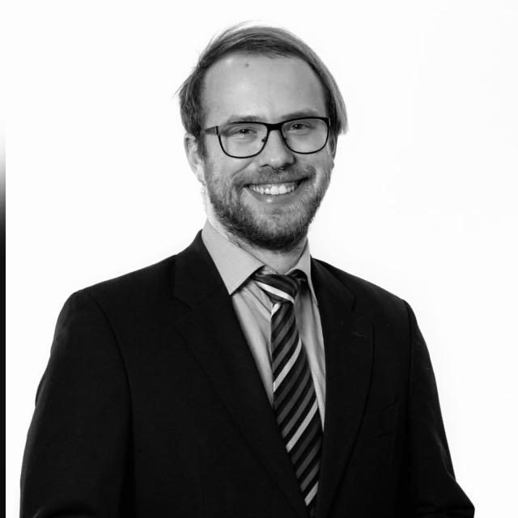

<div class="about_container">
    <div class="about_corpus">
        <div class="about_topic">
            <p>Something about me</p>
        </div>
        <div class="about_content">
            
           <div class="about_text">
            <p>Hello, my name is Stefan, and I'm a 28-year-old Fullstack Developer with a passion for technology and innovation. I have a strong foundation in IT, having completed an IT technician training and earned certification as an AWS Cloud Practitioner. This has given me a solid understanding of the technical skills required for success in this field.</p>
            <p>In my free time, I enjoy practicing Muay Thai as a way to stay active and challenge myself physically. I'm also an active volunteer as a rescue paramedic, which has allowed me to make a difference in people's lives during times of crisis.</p>
            <p>My personality is characterized by openness, empathy, sociability, and helpfulness. I enjoy meeting new people and learning about their experiences, and I'm always willing to lend a hand to those in need. I'm driven and focused on achieving my goals, both personally and professionally.</p>
            <p>While I'm proud of all that I've accomplished so far, I'm always seeking opportunities to grow and improve. I'm excited to see where my career and personal growth will take me in the future.</p>        
           </div>
       
        </div>
    </div>
</div>